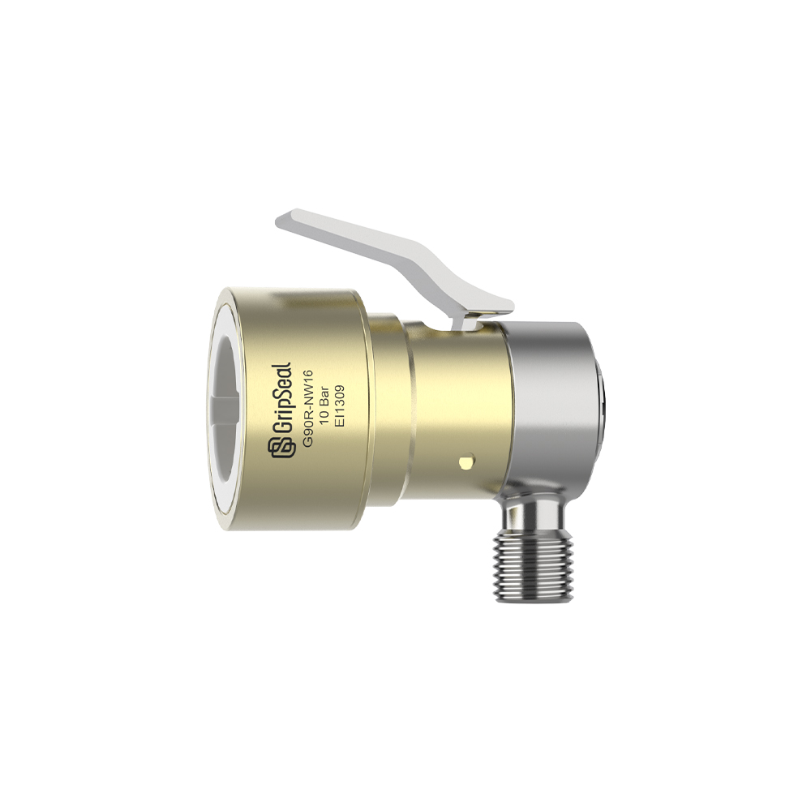

Series Shelf
Male-Female Quick Series Reserved Here
This category reserves the paired quick connector path. Series detail pages can be added after matching the domestic model data.

G72R
Reserved entry for paired quick-connect service points and removable line interfaces.
Male / FemaleQuick CouplingService
Reserve Series Detail
G90
Reserved route for special paired interfaces and future detailed product tables.
Quick ConnectSpecial InterfaceSelection Table
Reserve Series Detail